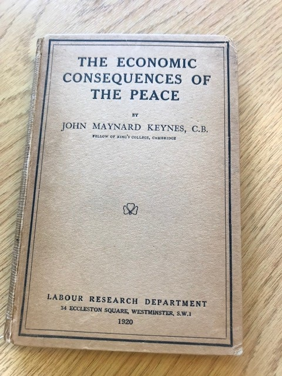

These are some quick notes on listening to a Libravox recording of Chapter Three of Keynes' Economic Consequences of the Peace the text of which can be found here. I was stunned at how good it was. It was like listening to a phone message from another planet.- The overarching casting of the drama in terms of the choice between looking forward and the loftiness of the future which seems possible for Western Civilisation (and that this is not only the best course but also the only rational one) and looking backwards (which ends in the magical thinking of basing one’s thinking on the impossibility of recovering the past).
[Clemencau's position] is the policy of an old man, whose most vivid impressions and most lively imagination are of the past and not of the future. … My purpose in this book is to show that the Carthaginian Peace is not practically right or possible. Although the school of thought from which it springs is aware of the economic factor, it overlooks, nevertheless, the deeper economic tendencies which are to govern the future. The clock cannot be set back. You cannot restore Central Europe to 1870 without setting up such strains in the European structure and letting loose such human and spiritual forces as, pushing beyond frontiers and races, will overwhelm not only you and your "guarantees," but your institutions, and the existing order of your Society.
- The picture it paints of the ever-presence of vanity in the world. And what is to be done in the face of vanity. A well-considered argument is the only cure we have. Of course it's only a 'talking cure' – exceptionally weak in its effects in the world, but what else is there? As John Henry Newman wrote and Manning Clark quoted: "Quarry the granite rock with razors, or moor the vessel with a thread of silk; then may you hope with such keen and delicate instruments as human knowledge and human reason to contend against those giants, the passion and pride of man."
- The issue of sensibility is front and centre – the need for sensibility to navigate the world and the way in which we all have only so much of it and need a division of labour in it – and Woodrow Wilson's utter failure on that score
- That this is an ethical as well as a cognitive matter (something more and more eclipsed in modernity)
- The idea of Woodrow Wilson as the philosopher-king with feet of clay – devoid of sensibility. Here's a fabulous passage:
When President Wilson left Washington he enjoyed a prestige and a moral influence throughout the world unequalled in history. His bold and measured words carried to the peoples of Europe above and beyond the voices of their own politicians. The enemy peoples trusted him to carry out the compact he had made with them; and the Allied peoples acknowledged him not as a victor only but almost as a prophet. In addition to this moral influence the realities of power were in his hands.
With what curiosity, anxiety, and hope we sought a glimpse of the features and bearing of the man of destiny who, coming from the West, was to bring healing to the wounds of the ancient parent of his civilization and lay for us the foundations of the future.
The disillusion was so complete, that some of those who had trusted most hardly dared speak of it. Could it be true? they asked of those who returned from Paris. Was the Treaty really as bad as it seemed? What had happened to the President? What weakness or what misfortune had led to so extraordinary, so unlooked-for a betrayal?
Yet the causes were very ordinary and human. The President was not a hero or a prophet; he was not even a philosopher; but a generously intentioned man, with many of the weaknesses of other human beings, and lacking that dominating intellectual equipment which would have been necessary to cope with the subtle and dangerous spellbinders whom a tremendous clash of forces and personalities had brought to the top as triumphant masters in the swift game of give and take, face to face in Council,—a game of which he had no experience at all.
We had indeed quite a wrong idea of the President. We knew him to be solitary and aloof, and believed him very strong-willed and obstinate. We did not figure him as a man of detail, but the clearness with which he had taken hold of certain main ideas would, we thought, in combination with his tenacity, enable him to sweep through cobwebs. Besides these qualities, he would have the objectivity, the cultivation, and the wide knowledge of the student. [Wilson had been an academic.] The great distinction of language which had marked his famous Notes seemed to indicate a man of lofty and powerful imagination. … With all this he had attained and held with increasing authority the first position in a country where the arts of the politician are not neglected. All of which, without expecting the impossible, seemed a fine combination of qualities for the matter in hand. …
The first glance at the President suggested not only that, whatever else he might be, his temperament was not primarily that of the student or the scholar, but that he had not much even of that culture of the world which marks M. Clemenceau and Mr. Balfour as exquisitely cultivated gentlemen of their class and generation. But more serious than this, he was not only insensitive to his surroundings in the external sense, he was not sensitive to his environment at all. What chance could such a man have against Mr. Lloyd George's unerring, almost medium-like, sensibility to every one immediately round him? To see the British Prime Minister watching the company, with six or seven senses not available to ordinary men, judging character, motive, and subconscious impulse, perceiving what each was thinking and even what each was going to say next, and compounding with telepathic instinct the argument or appeal best suited to the vanity, weakness, or self-interest of his immediate auditor, was to realize that the poor President would be playing blind man's buff in that party. Never could a man have stepped into the parlor a more perfect and predestined victim to the finished accomplishments of the Prime Minister. The Old World was tough in wickedness anyhow; the Old World's heart of stone might blunt the sharpest blade of the bravest knight-errant. But this blind and deaf Don Quixote was entering a cavern where the swift and glittering blade was in the hands of the adversary.
- The way any interpretation and any explanation must try to comprehend the essential issues – which will also be multi-dimensional. So skill in economics is important, but so too are other areas. Note Keynes respect for ‘history’ as a discipline which he is not schooled in, but this doesn’t lead him to simply pass the buck (not my department), but rather to a certain humility and tentativeness alongside the observation that the synthesis nevertheless needs to be done, so he’s proceeding as best he can.
Yet, if I seem in this chapter to assume sometimes the liberties which are habitual to historians, but which, in spite of the greater knowledge with which we speak, we generally hesitate to assume towards contemporaries, let the reader excuse me when he remembers how greatly, if it is to understand its destiny, the world needs light, even if it is partial and uncertain, on the complex struggle of human will and purpose, not yet finished, which, concentrated in the persons of four individuals in a manner never paralleled, made them, in the first months of 1919, the microcosm of mankind.
- The way in which morality enters in a kind of shadow play with sophistry protecting the high opinion the Great and the Good hold of themselves. Today the bullshit is piled higher and deeper, pervading not just politics and international relations but almost every aspect of our lives – certainly any with a mission statement. Speaking of Woodrow Wilson's 14 points which were what the belligerents bound themselves to in the Armistice:
This wise and magnanimous program for the world had passed on November 5, 1918, beyond the region of idealism and aspiration, and had become part of a solemn contract to which all the Great Powers of the world had put their signature. But it was lost, nevertheless, in the morass of Paris;—the spirit of it altogether, the letter in parts ignored and in other parts distorted.
Having decided that some concessions were unavoidable, [Wilson] might have [used] the financial power of the United States to secure as much as he could of the substance, even at some sacrifice of the letter. But the President was not capable of so clear an understanding with himself as this implied. He was too conscientious. Although compromises were now necessary, he remained a man of principle and the Fourteen Points a contract absolutely binding upon him. He would do nothing that was not honourable; he would do nothing that was not just and right; he would do nothing that was contrary to his great profession of faith. Thus, without any abatement of the verbal inspiration of the Fourteen Points, they became a document for gloss and interpretation and for all the intellectual apparatus of self-deception, by which, I daresay, the President's forefathers had persuaded themselves that the course they thought it necessary to take was consistent with every syllable of the Pentateuch.
- And allow one quote from a later chapter – the denouement, or one among many where truth is spoken to propaganda. Thus the comments of the German Financial Commission on the way in which, having fought a war to make the world safe for democracy, the allies showed no regard for it in Germany, with the Versailles Treaty breaching German sovereignty in numerous egregious ways. This is all a bit rich from the Germans given their conduct of the war, but a reasonable critique nevertheless.
"German democracy is thus annihilated at the very moment when the German people was about to build it up after a severe struggle—annihilated by the very persons who throughout the war never tired of maintaining that they sought to bring democracy to us.... Germany is no longer a people and a State, but becomes a mere trade concern placed by its creditors in the hands of a receiver, without its being granted so much as the opportunity to prove its willingness to meet its obligations of its own accord. The Commission, which is to have its permanent headquarters outside Germany, will possess in Germany incomparably greater rights than the German Emperor ever possessed; the German people under its régime would remain for decades to come shorn of all rights, and deprived, to a far greater extent than any people in the days of absolutism, of any independence of action, of any individual aspiration in its economic or even in its ethical progress".
plus ça change
My sentiments entirely
And, having now finished it, here's one final quote. The last paragraph of Chapter 6.
it's a very aristocratic way of writing, isn't it? Confident and pensive. Very old-style European academia. You can't get away with that anymore. But many read writing like that from the past.
It's also a style that's very, very hard to carry off. To modern ears and eyes, a lot of it comes across as arrogant BS.
But Keynes is different. Keynes does carry it off.
I'm not a Keynes expert's bootlace. But one possibility is that he was just a hell of a lot smarter than the average bear.